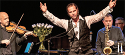

Musikalisch vor Willy de Ville verneigt
„Broken Heart" begeistert Applaus gezollt
Es wächst eine Rose in „Spanish Harlem", die es mit brachialer Gewalt durch den Beton schafft, so ein Willy de Ville Song, der mit Sänger Mario Götz inten siv daher kommt und ein bisschen die Intention des Benefizkonzerts repräsen tiert, das die Organisation Terre des Hommes-Hilfe für Kinder in Not, Murgtal Mittelbaden in der Reithalle or ganisierte. Der Erlös des Konzertes wird hauptsächlich an irakische und syrische Flüchtlinge auf der Flucht vor IS in den Kurdengebie ten gehen.
Ein legendäres Berlin-Konzert von Willy de Ville sei es gewesen, dass die vier Murgtäler Musiker dazu bewegt habe es genau in dieser Instrumentie rung nachspielen zu wollen, so Roland Hasenohr. Als Formation „Bröken Heart - A Tribute To Willy de Ville" zelebrie ren sie die Songs des amerikanischen Musikers, die sich fast ausschließlich um die Liebe drehen. Es sind die alten Ge schichten: er verlässt sie, sie verlässt ihn, Herzen werden gebrochen, Sehn sucht macht sich breit und die Melan cholie setzt ein. Die Willi de Ville Songs sind eher ruhig und melodisch, als auf brausend und rockig.
Herzergreifende Melodien und charismatische Stimme
Herzergreifende Melodien, hervorra gende Musik und die charismatische Stimme von Mario Götz machten das Konzert zu einem Geheimtipp, der nicht lange einer bleiben wird. „Let It Be Me" singt Mario Götz direkt an seine Frau Martina gerichtet und auch das Publi kum schmilzt dahin bei dem ehrlichen Song mit Mario Götz' rauer Soulstimme, der mit Saxofonist Gunter Arns noch einmal eine besondere Qualität be kommt. Wunderschön. Mehr braucht man eigentlich nicht.
Beim darauffolgenden Song klingt al les, alles wird Musik. Percussionist Vol ker Arns bringt einen ganz anderen Rhythmus mit und die Bühne scheint vor Klang zu explo dieren. Country steht der Band ebenso gut. Es ist ein ruhiges Stück, das von einer Liebe er zählt, die vorbei ist. Als ein wildes Lied kündigt Mario Götz einen Up-beat-Song mit Rock 'n' Roll Rhythmus an, der von der Steel Guitar lebt und wunderschöne Wow-Effekte liefert. „Save The Last Dance For Me" ist mit Mario Götzs Stim me eine frische soulige Sache, von Schmalz keine Spur. „Big Blue Dia mond" singt den Blues, denn wer kann sich solche Klunkern schon leisten? Es ist ein ruhiger melodischer Blues, bei dem der Schmerz eindrücklich ist und man unwillkürlich ein bisschen mitleidet. „Shake, Rattle & Roll" bringt Stimmung in den Saal und Gunter Arns am Saxofon tut das seinige dazu. Der Saal ist erfüllt von Wohlklang.
Marc O. Dopf darf am Piano glänzen und begeistert. „This Is The Way You Make A Broken Heart" lässt Mario Götzs Timbre brillieren. Ein lustiger Reigen der Streichinstrumente ist das „The Longest Train" mit Gitarre, Mandoline und Geige. „Come A Little Bit Closer" vereint alle Musiker auf der Bühne und macht richtig Laune. „Broken Heart" lieferten mit ihrem Willy de Ville Repertoire ein ausgezeichnetes Konzert mit handgemachter Musik und überaus spielfreudigen Musikern, die von Mario Götz' dunkler Soul und Blues Stimme wunderbar unterstrichen wur den. Begeisterter Applaus war der Lohn dafür. „Broken Heart" sind Mario Götz (Gesang), Marc O. Dopf (Piano), Ludwig Weber (Bass/Gesang) und Roland Hase nohr (Gitarre/Gesang) mit den Gastmu sikern Eckhard Rein (Geige), Gunter Arns (Saxofon) und Volker Arns (Percussion).
Herzliche Einladung zum Konzert mit Broken Heart am So, 19.07. in der Reithalle Rastatt
"A tribute to Willy DeVille" für irakische / syrische Flüchtlinge
Wenn am 'Sonntag, den 19.Juli um 19.30 Uhr die Gruppe Broken Heart sich der Musik von Willy DeVille widmet, erwartet die Zuhörer ein außergewöhnliches Konzert. Neben den vier Muskern von Broken Heart werden Gastmusiker mit Geige, Saxofon und Percussion leidenschaftlich, authentisch und gebührendem Respekt die Musik von Willy DeVille wieder aufleben lassen. Mario Götz (vocals), Marc O. Dopf (piano), Ludwig Weber (bass, vocals) und Roland Hasenohr (guitar,vocals) lassen unterstützt durch die Gastmusiker die alten Geschichten von Liebe, gescheiterten Existenzen, vom Leben auf der Straße und dem oftmals gebrochenen Herz erzählen.
Mit dem Erlös unterstützt das Kinderhilfswerk terre des hommes Bürgerkriegs-Flüchtlinge in den Lagern Syriens und des Nordirak. Die Lage der Flüchtlinge und die Zustände in den Lagern sind der reinste Albtraum. Die tdh-Schwester-Organisation Lausanne und tdh Deutschland helfen wo es nur geht, denn es herrscht Mangel an allen Ecken und Enden. Die Länder Jordanien/Syrien und Irak sind mit den immensen logistischen und humanitären Anforderungen völlig überfordert. Besonders dramatisch ist die Lage der Flüchtlinge in den kurdischen Autonomie-Gebieten im Nordirak, wo zurzeit etwa eine Million Iraker und Syrer Zuflucht suchen. Neben der gesundheitlichen Versorgung und der Versorgung mit Haushaltsgegenständen und Kleidern, spielt die psycho-soziale Betreuung der traumatisierten Kinder und improvisierter Unterricht (Klassenzimmer in Kleinbussen) durch Fachkräfte eine große Rolle.
Alle Achtung vor Broken Heart und den Gastmusikern, dass sie mit ihrem musikalischen Können einen ermutigenden Beitrag zur Linderung der Flüchtlingsnot leisten.
Ein ganz besonderer Dank gilt auch Fardar Barmani aus dem Irak. Er hat sich kurzfristig bereiterklärt, über seine Flucht aus dem Irak und den genauso schwierigen Weg seiner Integration in Deutschland zu berichten.
Die Mitarbeiter von terre des hommes freuen sich auf möglichst viele interessierte und engagierte Besucher und laden herzlich zu diesem Konzert ein.
Karten im VVK gibt es bei Musik Essbach und der Badner Halle noch bis Freitag 15 Uhr. Die Abendkasse öffnet um 18.30, Beginn ist um 19:30 Uhr.
Sechs Jahre nach dem Tod von Willy DeVille machen sich vier Musiker auf, diese Musik wieder im unglaublichen Gewand der Berliner Willy DeVille-Acoustic Trio-Konzerte von 2002 aufleben zu lassen. Mario Götz(voc.), Marc O. Dopf(piano), Ludwig Weber(bass, voc.) und Roland Hasenohr(gui., voc.) nähern sich der Musik von Willy DeVille mit größtem Respekt. Aber auch größter Authentizität. Und sicher mit absoluter Leidenschaft und Hingebung.
Sparsam instrumentiert liefert vor allem der Flügel das Fundament der Musik. Begleitet vom Kontrabass und der akustischen Gitarre lassen sich so die Geschichten von der mehr oder weniger glücklichen Liebe, von gescheiterten Existenzen, vom Leben auf der Straße und dem oftmals gebrochenen Herz erzählen. Geschichten, bei denen durchaus sogar der Himmel stehen bleibt: “One dream of my life, one night in eternity, the wind whispers soft to me, and heaven stood still”.
Die Songs nehmen die Herzen der Zuhörer oft in einen Würgegriff, nur um sie im nächsten Augenblick wieder sanft loszulassen. Balladen folgen Blues-Nummern, Cajun- und Mariachi-Songs auf Bluegrass- und Country-Songs. Neben den vier Musikern von „Broken Heart“ werden Gastmusiker mit Geige, Saxofon und Percussion am herzensbrecherischen Abend mitwirken.
Benefizkonzert für Flüchtlingskinder
Virtuoses Spiel des Kammerorchesters Rastatt
Mit dem Erlös des Klassik-Benefizkonzertes wird terre des hommes Murg tal/Mittelbaden sein Engagement für syrische und irakische Flüchtlingskin der in den entsprechenden Lagern in Jordanien, im Libanon und im Nordirak fortsetzen. Unterstützt wurde das Pro jekt vom Kulturring und dem Kulturamt Gaggenau.
In mehrerer Hinsicht hätte man dieser Veranstaltung noch mehr Zuschauer und Aufmerksamkeit gewünscht, aber, gemessen an den derzeitigen Rekord temperaturen, dankte Heinz Wolf von terre des hommes Murgtal für das doch zahlreiche Erscheinen. Dank der dreißig Spon soren, sei das Kon zert „in trockenen Tüchern". Wer der Hitze getrotzt hatte, wurde belohnt mit einem großen Auftritt des Kammeror chesters Rastatt, dem virtuosen Spiel der Solisten und der Überzeugung, ein herausragendes Musikereignis erlebt zu haben. Das begeisterte Publikum dank te mit anhaltendem Applaus.
Zahlreiche Zuhörer trotz Rekordtemperaturen
Es gab eigentlich nur Höhepunkte in dieser dreigeteilten Aufführung. Das Kammerorchester Rastatt unter Leitung von Peter Epple begann mit der Ouver türe B-Dur von Franz Schubert, es folgte die Concertante für Klavier, Violoncello und Orchester von Hugo Schuncke, die den beiden Solisten Gelegenheit gab, ihr musikalisches Können einzubringen und für Gänsehautatmosphäre zu sor gen: Die in Strasbourg geborene Marie- Claudine Papadopoulos (Violine), stu dierte unter anderem in Karlsruhe, kon zertiert heute mit namhaften Orchestern und ist mehrfache Preisträgerin.
Auch Alexandre Vay (Violoncello), ge boren in Le Mans, setzte nach seiner Ausbildung in Frankreich sein Studium in Karlsruhe fort und ist heute neben seiner Tätigkeit als stellvertretender So locellist beim Münchner Rundfunkor chester künstlerischer Leiter und Pro fessor an der Sommermusikakademie in Trouville-sur-Mer.
Im Mittelteil bril lierte Boris Feiner auf dem Steinway- Flügel in ganz unterschiedlichen Musikrichtungen. Der Meisterpianist jüdischer Abstam mung, der nach der Tschernobyl-Katastrophe nach Israel emigrierte, studierte dort sowie an der Musikhochschule Karlsruhe. Mit zahlreichen internatio nalen Preisen ausgezeichnet, tritt er heute bei Musikfestspielen und Orches tern auf. Auf die Sonate B-Dur von W. A. Mozart folgt der leidenschaftliche Feuervogel Igor Strawinskys und als Zuga be „Jesus bleibet meine Freude" von J. S. Bach.
Mit der Symphonie Nr. 94 von Joseph Haydn beendete das Kammerorchester eindrucksvoll die Veranstaltung.
Die Bewirtung mit türkischen Spezia litäten im Foyer während der beiden Pausen hatte die Fraueninitiative „Die Brücke" übernom men, Frauen türki scher Herkunft aus Rastatt und Umge bung, die sich eh renamtlich für in terkulturellen Dia log, Toleranz und Verständigung ein setzen.
Der Erlös dieser Veranstaltung ist bestimmt für die Organisationen und Initiativen vor Ort im Nordirak, Jordanien und im Libanon für Zu wendung, Schutz, und psycho-soziale Unterstützung der traumatisierten Flüchtlingskinder.
BNN vom 06.07.2015
Text: Elke Fischer
Ansprechpartner
Wolfgang Deppisch (Projektinfos) Tel. 07222 / 32927
Heinz Wolf (Sponsoring, Allgemeines) Tel. 07225 / 75543


;)
;)
;)
;)
;)
;)
;)
;)
;)
;)